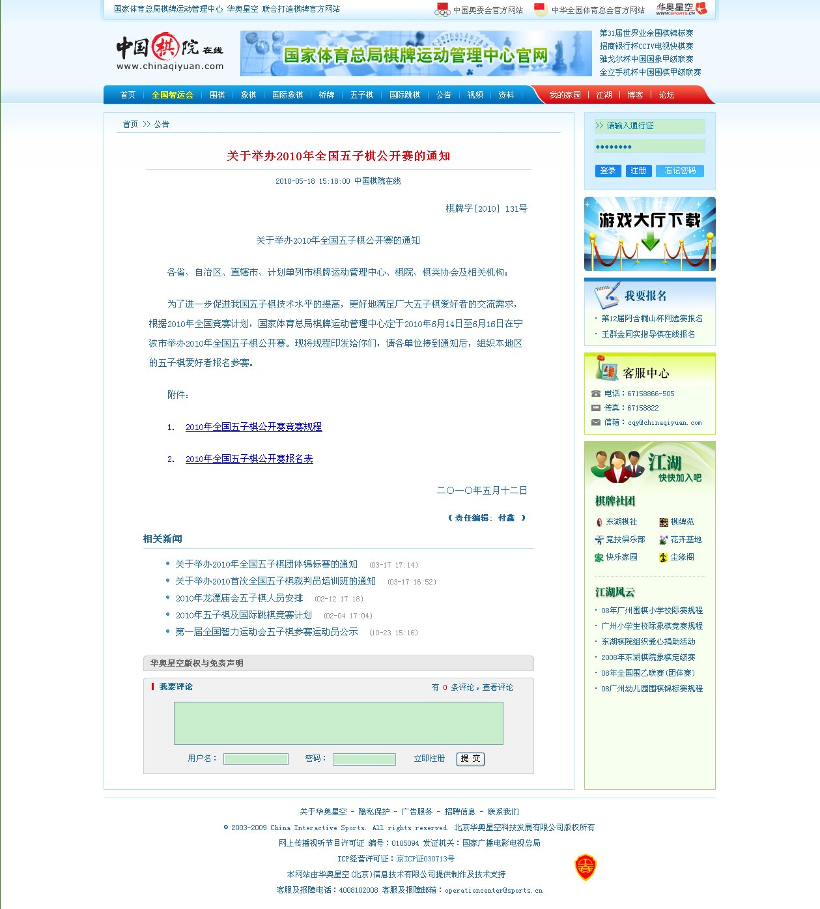

关于举办2010年全国五子棋公开赛的通知
#1 关于举办2010年全国五子棋公开赛的通知 作者：weigui 发表时间：2010-5-19 8:45:27
中国棋院在线《关于举办2010年全国五子棋公开赛的通知》
http://games.sports.cn/wuziqiorg/bulletin/2010-05-18/2018751.html
#11 Re:关于举办2010年全国五子棋公开赛的通知 作者：weigui 发表时间：2010-5-19 12:44:23
住宿地点：宁波月湖大酒店
http://www.elong.com/hotels/details.aspx?m=Image&hotelid=21202009
http://hotels.ctrip.com/Domestic/ShowHotelInfo.aspx?hotel=63574
［ 菜包先生 于 2010-5-19 14:33:17 时花20金币送鲜花一朵］
#12 Re:Re:关于举办2010年全国五子棋公开赛的通知 作者：菜包先生 发表时间：2010-5-19 14:41:52
（八）参赛选手赛前一天到赛区报到，提前报到者大会不予接待。
16号哪个时候的闭幕式？好订回程车票啊
比赛时间的具体安排？每天几轮啊
谢了
#13 Re:关于举办2010年全国五子棋公开赛的通知 作者：weigui 发表时间：2010-5-19 15:21:20
16号的闭幕式基本在中午12点结束，回程的安排选手可以选择2点或者以后的车次比较好，因为还要考虑午饭时间。
#14 Re:关于举办2010年全国五子棋公开赛的通知 作者：怪 发表时间：2010-5-19 19:41:10
意外伤害保险去哪里弄？
那个在宁波的也得住酒店吗？
具体开赛时间是每天几点？
#15 Re:关于举办2010年全国五子棋公开赛的通知 作者：舍露里 发表时间：2010-5-19 20:05:38
真希望能去
#16 Re:关于举办2010年全国五子棋公开赛的通知 作者：weigui 发表时间：2010-5-19 20:44:03
在宁波的没强制要求住宾馆，但必须签署安全协议，另外由于比赛为三天，而且就目前来看是需要9轮比赛的，基本是441，所以前两天
的时间安排会比较急，去远点的地方吃住有点不现实。
比赛基本在上午8点开始，第一天计划增加晚上的一轮。
#17 Re:关于举办2010年全国五子棋公开赛的通知 作者：weigui 发表时间：None
男女是分组比赛，所以参加比赛的选手特别是女选手，如果是跨组参加，必须在报名的时候说明。
本次比赛的奖励设置如下：
男子组第一 3000 元、
第二 2000 元，
第三 1000 元，
第四 500 元。
女子组第一 2000 元，
by:web版  IP：
已记录
IP：
已记录
#18 Re:关于举办2010年全国五子棋公开赛的通知 作者：怪 发表时间：2010-5-19 21:07:29
上午8点，离那有点远，不住还很麻烦阿。
那个意外伤害险怎么弄？
#19 Re:关于举办2010年全国五子棋公开赛的通知 作者：weigui 发表时间：2010-5-19 21:14:18
意外伤害保险如果没办法自己处理的话，参考去年比赛的安排，组委会统一帮助办理，去年是10元一人。#20 Re:关于举办2010年全国五子棋公开赛的通知 作者：陈国良 发表时间：2010-5-19 22:35:10
各方面准备都很充分，支持！#21 Re:关于举办2010年全国五子棋公开赛的通知 作者：天真無邪 发表时间：2010-5-20 14:39:27
能不能為有需要的棋手開具一份比賽証明呢 好讓請假容易點 請到假的話我也會參加#22 Re:Re:关于举办2010年全国五子棋公开赛的通知 作者：我就不信注册不上 发表时间：2010-5-21 14:33:42
引用：这样行吗？伟鬼老师把比赛文件扫描一下贴图这里，需要的拿去打印吧？
原文由 天真無邪 发表于 2010-5-20 14:39:27 :
能不能為有需要的棋手開具一份比賽証明呢 好讓請假容易點 請到假的話我也會參加
#23 Re:关于举办2010年全国五子棋公开赛的通知 作者：茗弈小刀 发表时间：2010-5-21 14:41:56
祝伟鬼老师五子事业一帆风顺！
祝愿比赛取得圆满成功！
最后祝茗弈怪叔叔泡妞和比赛取得双丰收。
#24 Re:关于举办2010年全国五子棋公开赛的通知 作者：weigui 发表时间：2010-5-21 15:41:18
回22楼，扫描在这里没什么问题，不过比赛的文件对一般的单位来说有没有用是不得而知的。希望有用吧。也可以在中国棋院在线直接
打印出来。那样也是比较方便的。
#25 全屏截图，拿去打印吧 作者：我就不信注册不上 发表时间：2010-5-21 16:28:35
引用：
原文由 weigui 发表于 2010-5-21 15:41:18 :回22楼，扫描在这里没什么问题，不过比赛的文件对一般的单位来说有没有用是不得而知的。希望有用吧。也可以在中国棋院在线直接
打印出来。那样也是比较方便的。
［此帖子已被 我就不信注册不上 在 2010-5-21 16:29:35 编辑过］
#26 Re:关于举办2010年全国五子棋公开赛的通知 作者：也也 发表时间：2010-5-21 17:55:49
总奖金支出 貌似 过万了 100人参加 还赔钱。。向主办方致敬。报名费全部用于 比赛不是空话 呀 哈哈 。 不过还是希望 学生半价。
#27 Re:关于举办2010年全国五子棋公开赛的通知 作者：无志气广林 发表时间：2010-5-21 22:22:20
希望五子棋能够发杨光大！#28 Re:关于举办2010年全国五子棋公开赛的通知 作者：叶昀 发表时间：2010-5-23 0:42:45
支持
#29 Re:关于举办2010年全国五子棋公开赛的通知 作者：无聊鬼大叔 发表时间：2010-5-24 9:29:26
住在酒店,比赛地点在青少年宫?如果是,两者相距远不远?#30 Re:关于举办2010年全国五子棋公开赛的通知 作者：五子天下 发表时间：2010-5-24 12:13:24
重点是五子棋真的不普及。难市场化！~~！~~#31 Re:关于举办2010年全国五子棋公开赛的通知 作者：安娜制作所 发表时间：2010-5-24 16:13:39
支持徐老师!
#32 Re:关于举办2010年全国五子棋公开赛的通知 作者：卢老师 发表时间：2010-5-26 5:50:26
希望大家能抽空的尽量抽个空,五子棋的发展程度与大家的支持程度是分不开的,大家也都知道五子棋目前的整体环境与困境.在国内做过五子棋推广与普及的几个人都知道.做推广与普及是那么的艰辛.